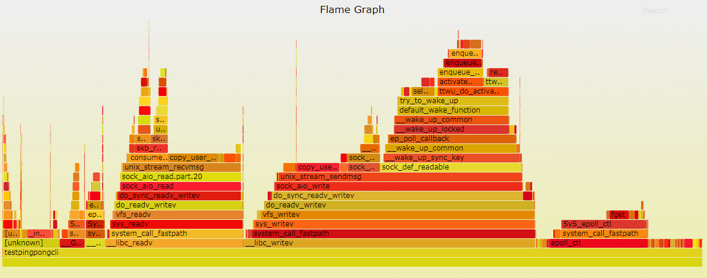
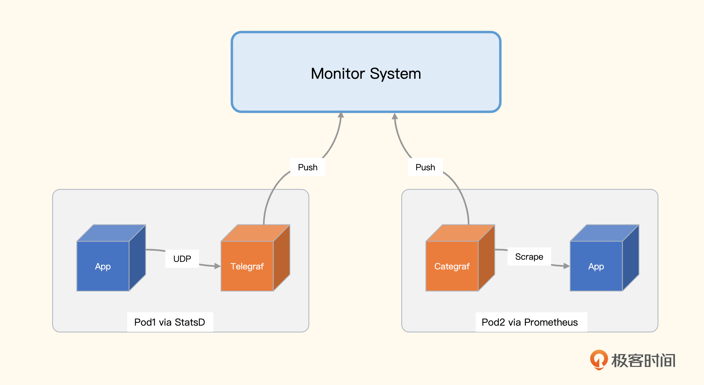
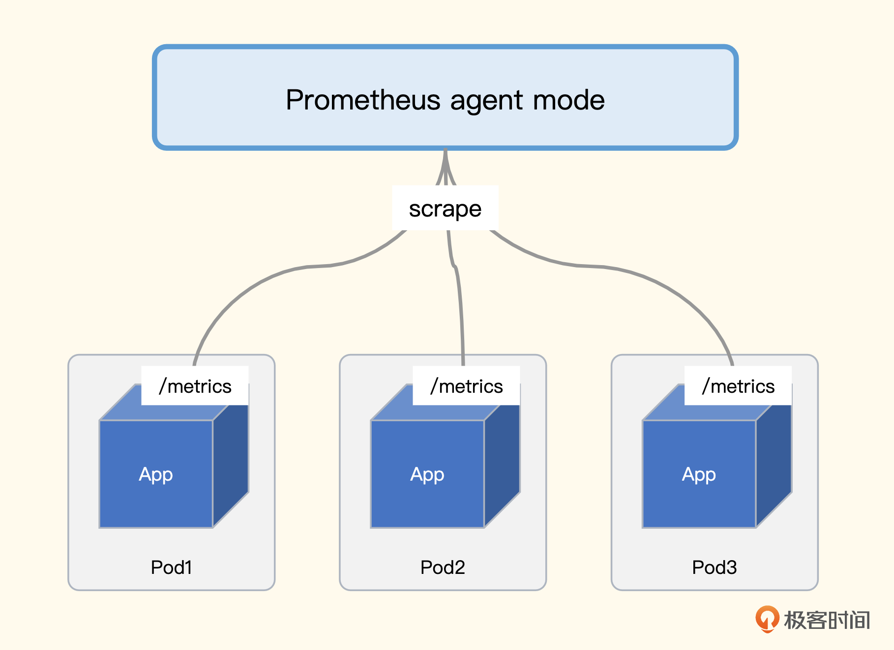
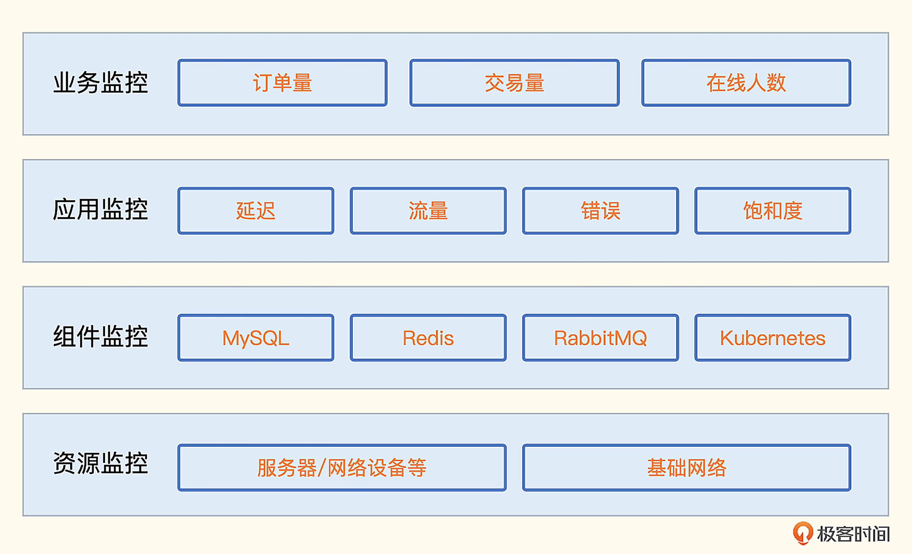

监控数据采集
因为要监控的目标五花八门，怎样才能让监控数据更加完备，怎样才能知道哪些指标更加重要，解决这些问题都需要监控方法论的指导。目前业界比较流行的方法论有 Google 的四个黄金指标、RED方法、USE方法。
Google的四个黄金指标
Google的四个黄金指标着眼点在服务监控，这四个指标分别是延迟、流量、错误和饱和度。
- 延迟：服务请求所花费的时间，比如用户获取商品列表页面调用的某个接口，花费30毫秒。这个指标需要区分成功请求和失败请求，因为失败的请求可能会立刻返回，延迟很小，会扰乱正常的请求延迟数据。
- 流量：HTTP服务的话就是每秒HTTP请求数，RPC服务的话就是每秒RPCCall的数量，如果是数据库，可能用数据库系统的事务量来作为流量指标。
- 错误：请求失败的速率，即每秒有多少请求失败，比如HTTP请求返回了500错误码，说明这个请求是失败的，或者虽然返回的状态码是200，但是返回的内容不符合预期，也认为是请求失败。
- 饱和度：描述应用程序有多“满”，或者描述受限的资源，比如CPU密集型应用，CPU使用率就可以作为饱和度指标。
有了这个方法论的指导，我们就知道服务监控应该重点关注哪些指标了。如果要为某个服务配置监控大盘，监控大盘里就要包含上述这几类指标。如果要配置告警规则，也要重点照顾这几类指标。
可以这么说，只要上述这些指标都是正常的，这个服务就是健康的。反之，如果这些指标有问题，服务就是不健康的，并且大概率已经影响了上游服务甚至终端用户。
Google的四个黄金指标主要是针对服务的监控，Weaveworks的工程师认为饱和度这个指标比较高级，延迟、流量、错误这三个指标相对更重要，所以将其简化为RED方法，下面我们来看一下RED方法的定义。
RED方法
- （Request）Rate：请求速率，每秒请求数。
- （Request）Errors：错误，每秒错误请求数。
- （Request）Duration：延迟，每个请求的延迟分布情况。
三个英文单词取首字母组成RED方法，姑且可以看做是Google四个黄金指标的简化版，作者很逗，说为什么起名为RED呢？因为他们内部普遍应用USE方法，为了和USE相呼应，所以取了RED这个自认为响亮的名字。这个USE又是什么方法呢？下面我们就来介绍一下。
USE方法
USE方法的提出者是大名鼎鼎的Brendan Gregg，如果你没听过这个名字，也没关系，你应该听过火焰图吧，性能分析用的火焰图就是这位大哥发明的。你可以点开 USE 方法 的官方介绍看看。

USE是使用率（Utilization）、饱和度（Saturation）、错误（Error）的缩写，主要用于分析资源问题。什么是资源？在Gregg对模型的定义中，是指传统意义上的物理服务器组件，比如CPU、硬盘等，但现在很多人已经扩展了资源的范围，把一些软件资源也包含在内。下面我们对使用率、饱和度、错误做一个更详细的解释。
- 使用率：这个我们最熟悉，比如内存使用率、CPU使用率等，是一个百分比。
- 饱和度：资源排队工作的指标，无法再处理额外的工作。通常用队列长度表示，比如在iostat里看到的aqu-sz就是队列长度。
- 错误：资源错误事件的计数。比如malloc()失败次数、通过ifconfig看到的errors、dropped包量。有很多错误是以系统错误日志的方式暴露的，没法直接拿到某个统计指标，此时可以进行日志关键字监控。
USE方法和Google四个黄金指标配合使用，我们就可以知道不同类别的监控对象应该关注的核心指标是什么了。那监控对象都有哪些类别呢？换句话说，我们做了哪些方面的监控才算是把监控体系建设完备了？下面我们就来梳理一下监控对象的类别。
监控分类
业务监控
这类指标是管理层非常关注的，代表企业营收，或者跟客户主流程相关，类似BI数据。不过相比BI数据，业务监控指标有两点不同。
- 对精确度要求没有那么高：因为监控只要发现趋势异常就可以，至于是从5000变成了1000还是变成了1001，没有什么区别。
- 对实时性要求很高：很多BI数据可能是小时级别或天级别的，这个时效性无法满足监控的需求，监控是希望越早发现问题越好，要是一个小时才发现问题，黄花菜都凉了。
技术人员应该针对这类指标做高优保障，如果所有的指标都同等对待，重要的告警就容易被普通告警淹没，所以告警一定要分级对待。
很多公司的故障管理比较粗放，只要有报警事件产生，就认为是有故障，这是不对的。在微服务和云原生技术盛行的当下，某个机器的CPU飙高了，或者IO打满了，对最终用户的体验可能是没有任何影响的，但是核心业务指标异常，一定是故障，因为这类指标异常代表着最终用户体验受损，或者造成了直接资损。
作为中后台的团队，做的很多稳定性保障的工作不容易让管理层看到，业务指标是一个突破口，如果能够把这类指标梳理清楚，是很容易让老板看到我们的价值的。
应用监控
应用监控就是指对应用程序（Application）的监控，Google的四个黄金指标、RED方法主要就是针对应用监控的。
每个公司都应该有统一的APM（Application Performance Management），也就是应用性能管理方案，从指标着手的话一般使用埋点机制来做，比如 StatsD、Prometheus SDK 等，或者直接分析接入层日志，从日志提取指标；从链路追踪着手的话可以使用 Zipkin、SkyWalking 等。
像 Java 这种字节码技术的语言，采用 JavaAgent 技术可以做到代码无侵入埋点。但是像 Go、C++这类语言，一般都是采用埋点机制来做，由统一的工具团队提供一些框架，在框架里内置埋点逻辑，这样普通研发人员也就基本不会有代码侵入的感觉了。
应用监控和业务监控有两种典型的采集手段，一个是埋点，一个是日志解析。
所谓的代码埋点方式，是指应用程序内嵌一些监控相关的SDK（一个 lib 库），在请求的关键链路上调用SDK的方法，告诉SDK当前是个什么请求、耗时多少、是否成功之类的，SDK汇总这些数据并二次计算，最终推给监控服务端。
比如一个用Go写的Web程序，提供了10个HTTP接口，我们想获取这10个接口的成功率和延迟数据，那就要写程序实现这些逻辑，包括数据采集、统计、转发给服务端等。这些监控相关的逻辑是典型的横向需求，这个Web程序有需求，其他的程序也有这个需求，所以就把这部分代码抽象成一个统一的Lib，即上面提到的这个SDK，每个需要监控逻辑的程序都可以复用这个SDK，提升效率。
你可能会疑惑，我的监控系统已经提供了 PUSH 接口了，比如 Prometheus 的 Pushgateway 组件，在应用程序里直接调用 Pushgateway 接口推数据不就行了吗？为什么还需要 SDK 呢？
核心原因是 SDK 可以帮我们封装一些通用的计算逻辑。比如有个指标是 Summary 类型，可以提供某个接口99分位的延迟数据。如果没有 SDK，我们需要怎么做呢？每当这个接口响应一次请求，就记录一个延迟时间，然后存入一个内存数据结构，等到一个时间间隔，比如10秒钟，就把这段时间内所有的延迟数据排个序，然后取99分位的值，最后调用 Pushgateway 的接口推过去。很麻烦是不是？
我们需要准备这个数据结构，这个数据结构还需要线程安全。如果请求非常频繁，耗时数据很多，还得进行限制，比如这个数据结构只保存1000个耗时数据。然后到了时间间隔之后需要排序，还要组织成监控系统需要的数据格式，还需要调用 HTTP 接口推送数据。
而 SDK 就是做这些通用逻辑的，应用程序要做的，就是拿到延迟数据之后，调用 SDK 的方法告知 SDK，说又有一次新的接口调用，延迟数据是多少，哥们后续就交给你了，SDK 就能完成剩余所有的事情。
但是每个项目都要调用这个SDK的方法仍然显得很冗余，是否有更简单的办法呢？有！每个公司可以建立统一的框架开发团队，开发统一的HTTP框架，在框架里使用AOP的编程方式，内置采集这些监控数据。这样一来，只要某个团队用了这个统一的HTTP框架，就自动具备了监控埋点能力。同理，我们也可以构建统一的RPC调用框架，统一的MySQL调用框架，这样就逐步构建了统一且完备的应用监控数据收集体系。
业界比较知名的跨语言埋点工具是 StatsD 和 Prometheus。当然，有些语言有自己生态的常用工具，比如 Java 生态的 Micrometer，不过一般公司都会使用多种语言，这些跨语言的埋点方案通常使用频率会更高。
无论是StatsD，还是使用Prometheus，总之通过埋点我们采集到了监控指标。接下来这些数据如何进入监控服务端呢？我们看一下这个通路典型的构建方式。
数据传输通路
使用 StatsD 的埋点方式，数据通过 UDP 推给 Telegraf，Telegraf 推给后端监控系统。如果是通过 Prometheus 的方式来埋点，就是暴露 /metrics 接口，等待监控系统来拉。如果应用是部署在物理机或虚拟机上，直接通过本地的监控 agent 来拉取即可。如果应用是部署在 Kubernetes 的 Pod 里，则有两种办法来拉取数据，一个是 Sidecar 模式，一个是中心端服务发现的模式。下面这个示意图展示的是 Sidecar 模式。

左侧 Pod1 里有两个容器，App 通过 StatsD 埋点，然后通过 UDP 推给 Telegraf，Telegraf 接收到数据之后做二次计算，把结果推给监控服务端；右侧 Pod2 里也有两个容器，App 通过 Prometheus SDK 埋点，暴露 /metrics 接口，Categraf 通过这个接口拉取数据，然后推给监控服务端。
这种方式的优点是比较灵活，Pod 内怎么做应用自己说了算。即使给 /metrics 接口增加一些认证鉴权、指标过滤、扩展标签的逻辑，都不影响其他的 Pod。数据是推给监控服务端的，监控服务端接收数据的组件可以做成无状态集群，前面架设负载均衡，整个架构非常简单、扩展性也很好。当然缺点也很明显，每个 Pod 里都伴生 Sidecar agent，浪费资源。
StatsD 埋点的方式只能使用 Sidecar 模式传输数据，而 Prometheus SDK 埋点还有第二种数据抓取方式：中心端服务发现模式。

每个应用容器都统一暴露 /metrics 接口，监控抓取器通过 Kubernetes 服务发现机制，找到所有的 Pod，分别抓取即可。不过，并不是所有的 Pod 都暴露指标数据，即使暴露了，接口路径也未必一定是 /metrics，这就需要有一个机制和规范，通过这个机制告诉指标抓取器，选择哪个类型的 Pod 抓数据，抓数据的时候使用哪个端口、哪个接口路径来抓。
一般我们使用 Pod 注解来承接这个规范，比如我们制定标准：所有想要被抓取监控数据的 Pod 都统一暴露如下注解。
prometheus.io/scrape=true
prometheus.io/metric_path=<path>
prometheus.io/scrape_port=<port>
然后我们就可以写抓取 Job 来抓取这类数据了，下面我给出一个样例。
- job_name: "kubernetes-pods"
kubernetes_sd_configs:
- role: pod
relabel_configs:
# "prometheus.io/scrape = true" annotation.
- source_labels: [__meta_kubernetes_pod_annotation_prometheus_io_scrape]
action: keep
regex: true
# "prometheus.io/metric_path = <metric path>" annotation.
- source_labels: [__meta_kubernetes_pod_annotation_prometheus_io_metric_path]
action: replace
target_label: __metrics_path__
regex: (.+)
# "prometheus.io/scrape_port = <port>" annotation.
- source_labels: [__address__, __meta_kubernetes_pod_annotation_prometheus_io_scrape_port]
action: replace
regex: ([^:]+)(?::\d+)?;(\d+)
replacement: $1:$2
target_label: __address__
- action: labelmap
regex: __meta_kubernetes_pod_label_(.+)
- source_labels: [__meta_kubernetes_namespace]
action: replace
target_label: namespace
- source_labels: [__meta_kubernetes_pod_name]
action: replace
target_label: pod
我们分析一下中心端服务发现机制的优缺点。优点很明显，不需要 sidecar 的 agent 了，大幅节省资源，缺点是所有的抓取规则都是统一的，不好为每个 Pod 单独指定一些认证机制、过滤规则等。不是说不能干，而是要做的话就得修改中心端这个统一的抓取规则，非常不方便，稍有不慎还容易改错，影响到别的Pod。
当然了，一般来说不提供这个灵活性也不是太大的问题，大家遵照一个统一的规范也挺好的，如果真的有某个 Pod 需要额外做一些灵活配置，大不了就不开那些注解，仍使用 sidecar 模式就好。这两种方式并不一定要二选一，同时并用也没有任何问题。
对于自研的软件，在一开始就建立可观测能力是非常好的选择，但是很多软件可能无法修改源代码，比如一些外采的软件，那就只能用一些外挂式的手段，比如在请求链路上插入一些代理逻辑，或者读取分析应用日志。
典型的代理方式是 Nginx，如果是 HTTP 服务，从 Nginx 的 Access 日志中可以获取很多信息，比如访问的是哪个接口，用的什么 HTTP 方法，返回的状态码是什么，耗时多久等等。这些信息对应用的监控很有帮助。
这种方式需要内嵌SDK，对代码有侵入性，是否有更简单的办法呢？有！对于Java这种字节码语言，我们可以使用 JavaAgent 技术，动态修改字节码，自动获取监控数据，到Google上通过关键词“javaagent monitoring”可以找到很多资料。
当然，现在也开始流行 eBPF 技术，有些厂商在尝试，你也可以关注下。不过在生产实践中，我观察大部分厂商还是在用埋点的方式采集监控数据。
对于自研的程序，代码埋点是没问题的，但是很多程序可能是外采的，我们没法修改它的源代码，这时候就要使用 日志解析 的方式了。一般程序都会打印日志，我们可以写日志解析程序，从日志中提取一些关键信息，比如从业务日志中很容易拿到Exception关键字出现的次数，从接入层日志中很容易就能拿到某个接口的访问次数。
提取指标的典型做法
根据提取规则运行的位置可以分为两类做法，一个是在中心端，一个是在日志端。
中心端 就是把要处理的所有机器的日志都统一传到中心，比如通过 Kafka 传输，最终落到 Elasticsearch，指标提取规则可以作为流计算任务插到 Kafka 通道上，性能和实时性都相对更好。或者直接写个定时任务，调用 Elasticsearch 的接口查询日志，同时给出聚合计算函数，让 Elasticsearch 返回指标数据，然后写入时序库，实时性会差一些，但也基本够用。
日志端 处理是指提取规则直接运行在产生日志的机器上，流式读取日志，匹配正则表达式。对于命中的日志，提取其中的数字部分作为指标上报，或者不提取任何数字，只统计一下命中的日志行数有时也很有价值，比如统计一下 Error 或 Exception 关键字出现的次数，我们就知道系统是不是报错了。
中心端处理的方式，我没有找到开源解决方案，如果你知道有好用的开源方案可以在评论区留言分享。日志端处理的方式，倒是有很多开源方案，比较有名的是 mtail 和 grok_exporter，mtail 发布时间更久，3400 star，grok_exporter 发布时间晚一些，700 star，不过它们原理上是类似的。
组件监控
这里我们把各类数据库、中间件、云平台，统称为组件，组件监控是非常考验知识广度的。一般监控系统的研发人员，很难把每个组件的机理都搞清楚，所以定义统一的接入数据规范，让专业的人去采集各个组件的数据是更合理的做法。
有个好现象是，很多组件的研发人员，已经开始让组件自身直接支持 Prometheus 协议，吐出 metrics 数据，除了 etcd、Kubernetes 这些云原生时代的组件，一些老的组件，比如 RabbitMQ、ZooKeeper 等，也在新版本里直接做了支持，实属行业幸事。
资源监控
基础资源的监控，主要是针对设备和网络，设备又分为服务器、网络设备，网络监控又分为连通性监控、质量监控、流量监控。下面我们分别做个简单介绍。
设备监控
一提起设备监控，你可能立马会想到CPU、内存使用率监控，除了这些之外，如果我们想获取硬件模块的健康状况，比如电源电压、风扇转速、主板环境温度等，就需要走IPMI协议，通过带外网络采集。
网络设备，典型的就是交换机、防火墙，一般是通过SNMP协议获取指标，比如交换机各个网口的流量、包量。也可以通过syslog的方式，把交换机的日志转存出来，到服务器上分析。
网络监控
网络连通性监控最为常见，通过ICMP协议，部署探针机器，对目标设备做PING探测，能探通就表示能连通，探测失败就是连不通。当然，有些机器可能是禁PING的，此时就需要用TCP或HTTP之类的协议去探测了。
PING探测可以拿到丢包率和延迟数据，我们可以用这些数据分析网络质量。比如两个机房之间的专线，我们用A机房的探针去探测B机房的目的设备，就能轻易知道机房之间的网络质量情况。
最后是流量监控，也会用在多个地方，比如机器的网卡流量、交换机的网口流量、机房出口流量，也是整个监控体系的重要一环。
监控数据的采集方式及原理
采集方法的多样性，比如读取 /proc 目录、执行系统调用、执行命令行工具、远程黑盒探测、远程拉取特定协议的数据、连到目标上去执行指令获取输出、代码埋点、日志分析提取等各种各样的方法。这一讲我会从中挑选一些比较典型的手段分享给你。下面我们就按照使用频率从高到低依次看一下，先来看读取 /proc 目录的方式。
读取 /proc 目录
/proc 是一个位于内存中的伪文件系统，该目录下保存的不是真正的文件和目录，而是一些“运行时”信息，Linux操作系统层面的很多监控数据，比如内存数据、网卡流量、机器负载等，都是从 /proc 中获取的信息。
我们先来看一下内存相关的指标。
[root@dev01.nj ~]# cat /proc/meminfo
MemTotal: 7954676 kB
MemFree: 211136 kB
MemAvailable: 2486688 kB
Buffers: 115068 kB
Cached: 2309836 kB
...
内存总量、剩余量、可用量、Buffer、Cached等数据都可以轻易拿到。当然， /proc/meminfo 没有使用率、可用率这样的百分比指标，这类指标需要二次计算，可以在客户端采集器中完成，也可以在服务端查询时现算。
内存相关的指标都是Gauge类型的，下面我们再来看一下网卡流量相关的指标，网卡相关的数据都是Counter类型的数据。
[root@dev01.nj ~]# head -n3 /proc/net/dev
Inter-| Receive | Transmit
face |bytes packets errs drop fifo frame compressed multicast|bytes packets errs drop fifo colls carrier compressed
eth0: 697407964307 2580235035 0 0 0 0 0 0 1969289573661 3137865547 0 0 0 0 0 0
我的机器上网卡比较多，所以这个文件的内容有很多行，通过head命令只查看前面几行，可以看到eth0网卡的指标值。整体上分两部分，前一部分是 Receive，表示入方向，后一部分是 Transmit，表示出方向。697407964307这个值表示eth0网卡入方向收到的byte总量，2580235035则表示eth0网卡入方向收到的packet总量。
注意了，这里所谓的总量，是指操作系统启动以来的累计值。从监控角度，通常我们不关注这个总量，而是关注最近一分钟或者最近一秒钟的流量是多少，所以在服务端看图的时候，通常要使用irate函数做二次计算。
看到这里，你可能会觉得，OS层面的监控很简单，不就是读取 /proc 目录下的内容吗？这倒也不尽然，有些数据从 /proc 下面是拿不到的，比如硬盘使用率。我们可以从 /proc/mounts 拿到机器的挂载点列表，但具体每个挂载点的使用率，就需要系统调用了。
OS内的数据采集，除了读取 /proc 目录之外，也经常会通过执行命令行工具的方式采集指标，下面我们再来看一下这种方式。
执行命令行工具
这种方式非常简单，就是调用一下系统命令，解析输出就可以了。比如我们想获取9090端口的监听状态，可以使用ss命令 ss -tln|grep 9090，想要拿到各个分区的使用率可以通过df命令 df -k。但是这个方式不太通用，性能也不好。
先说通用性问题，就拿ss命令来说吧，不是所有的机器都安装了这个命令行工具，而且不同的发行版或不同ss版本，命令输出内容格式可能不同。性能问题也容易理解，调用命令行工具是需要fork一个进程的，相比于进程内的逻辑，效率大打折扣，不过监控采集频率一般都是10秒起步，不频繁，所以这个性能问题倒不是什么大事，关键还是通用性问题。
读取本地 /proc 目录或执行命令行工具，都是在目标监控机器上进行的操作。有的时候，我们无法在目标机器上部署客户端程序，这时候就需要黑盒探测手段了。
远程黑盒探测
典型的探测手段有三类，ICMP、TCP和HTTP。有一个软件叫Blackbox Exporter，就是专门用来探测的，Categraf、Datadog-Agent等采集器也都可以做这种探测。
ICMP协议，我们可以通过Ping工具做测试，你可以看一下这个例子。
[root@dev01.nj ~]# ping -c 3 www.baidu.com
PING www.a.shifen.com (180.101.49.13) 56(84) bytes of data.
64 bytes from 180.101.49.13 (180.101.49.13): icmp_seq=1 ttl=251 time=1.41 ms
64 bytes from 180.101.49.13 (180.101.49.13): icmp_seq=2 ttl=251 time=1.39 ms
64 bytes from 180.101.49.13 (180.101.49.13): icmp_seq=3 ttl=251 time=1.38 ms
--- www.a.shifen.com ping statistics ---
3 packets transmitted, 3 received, 0% packet loss, time 2003ms
rtt min/avg/max/mdev = 1.382/1.393/1.405/0.009 ms
这里我们使用Ping工具向Baidu发了3个数据包，得到了多个指标数据。
- 丢包率：0%
- min rtt：1.382
- avg rtt：1.393
- max rtt：1.405
- ttl：251
监控采集器和手工Ping测试的原理是一样的，也是发几个包做统计。不过有些机器是禁Ping的，这时候我们就可以通过TCP或HTTP来探测。对于Linux机器，一般是会开放sshd的22端口，那我们就可以用类似telnet的方式探测机器的22端口，如果成功就认为机器存活。
对于HTTP协议的探测，除了基本的连通性测试，还可以检查协议内容，比如要求返回的status code必须是200，返回的response body必须包含success字符串，如果任何一个条件没有满足，从监控的角度就认为是异常的。
有黑盒监控，自然就有白盒监控。黑盒监控是把监控对象当成一个黑盒子，不去了解其内部运行机理，只是通过几种协议做简单探测。白盒监控与之相反，它要收集能够反映监控对象内部运行健康度的指标。但是监控对象的内部指标，从外部其实是无法拿到的，所以白盒监控的指标，需要监控对象自身想办法暴露出来。最典型的暴露方式，就是提供一个HTTP接口，在response body中返回监控指标的数据。下面我们就来看一下这种采集方式。
拉取特定协议的数据
有很多组件都通过HTTP接口的方式，暴露了自身的监控指标。这里我给你举几个例子，让你有个感性的认识，比如Elasticsearch的 /_cluster/health 接口。
[root@dev01.nj ~]# curl -uelastic:Pass1223 http://10.206.0.7:9200/_cluster/health -s | jq .
{
"cluster_name": "elasticsearch-cluster",
"status": "yellow",
"timed_out": false,
"number_of_nodes": 3,
"number_of_data_nodes": 3,
"active_primary_shards": 430,
"active_shards": 430,
"relocating_shards": 0,
"initializing_shards": 0,
"unassigned_shards": 430,
"delayed_unassigned_shards": 0,
"number_of_pending_tasks": 0,
"number_of_in_flight_fetch": 0,
"task_max_waiting_in_queue_millis": 0,
"active_shards_percent_as_number": 50
}
我们可以看到，返回的内容大多是指标数值，转换成监控服务端要求的数据格式，传上去即可。除了 /_cluster/health ，还可以测试一下 /_cluster/stats，也能帮你了解这种获取指标的方式。
除了Elasticsearch，还有很多其他组件也是用这种方式来暴露指标的，比如RabbitMQ，访问 /api/overview 可以拿到Message数量、Connection数量等概要信息。再比如 Kubelet，访问 /stats/summary 可以拿到Node和Pod等很多概要信息。
不同的接口返回的内容虽然都是指标数据，但是要推给监控服务端，还是要做一次格式转换，比如统一转换为 Prometheus 的文本格式。要是这些组件都直接暴露 Prometheus 的协议数据就好了，使用统一的解析器，就能大大简化监控采集逻辑。所幸这个趋势正在发生，上一讲我们也提到了，像etcd、CoreDNS、新版ZooKeeper、新版RabbitMQ、nginx-vts等，都内置暴露了 Prometheus 协议数据，可谓行业幸事。
这种拉取监控数据的方式虽然需要做一些数据格式的转换，但并不复杂。因为目标对象会把需要监控的数据直接通过接口暴露出来，监控采集器把数据拉到本地做格式转换即可。更复杂的方式是需要我们连接到目标对象上执行指令，MySQL、Redis、MongoDB等都是这种方式，下面我们就来一起看一下这种采集方式的工作原理。
连接到目标对象执行命令
目前最常用的数据库就是MySQL和Redis了，我们就拿这两个组件来举例。先说MySQL，我们经常需要获取一些连接相关的指标数据，比如当前有多少连接，总共拒绝了多少连接，总共接收过多少连接，登录MySQL命令行，使用下面的命令可以获取。
mysql> show global status like '%onn%';
+-----------------------------------------------+---------------------+
| Variable_name | Value |
+-----------------------------------------------+---------------------+
| Aborted_connects | 3212 |
| Connection_errors_accept | 0 |
| Connection_errors_internal | 0 |
| Connection_errors_max_connections | 0 |
| Connection_errors_peer_address | 0 |
| Connection_errors_select | 0 |
| Connection_errors_tcpwrap | 0 |
| Connections | 3281 |
| Locked_connects | 0 |
| Max_used_connections | 13 |
| Max_used_connections_time | 2022-10-30 16:41:35 |
| Performance_schema_session_connect_attrs_lost | 0 |
| Ssl_client_connects | 0 |
| Ssl_connect_renegotiates | 0 |
| Ssl_finished_connects | 0 |
| Threads_connected | 1 |
+-----------------------------------------------+---------------------+
16 rows in set (0.01 sec)
Threads_connected 表示当前有多少连接，Max_used_connections 表示曾经最多有多少连接，Connections表示总计接收过多少连接。当然，除了连接数相关的指标，通过 show global status 还可以获取很多其他的指标，这些指标用于表示MySQL的运行状态，随着实例运行，这些数据会动态变化。
还有另一个命令 show global variables 可以获取一些全局变量信息，比如使用下面的命令可以获取MySQL最大连接数。
mysql> show global variables like '%onn%';
+-----------------------------------------------+-----------------+
| Variable_name | Value |
+-----------------------------------------------+-----------------+
| character_set_connection | utf8 |
| collation_connection | utf8_general_ci |
| connect_timeout | 10 |
| disconnect_on_expired_password | ON |
| init_connect | |
| max_connect_errors | 100 |
| max_connections | 5000 |
| max_user_connections | 0 |
| performance_schema_session_connect_attrs_size | 512 |
+-----------------------------------------------+-----------------+
9 rows in set (0.01 sec)
其中 max_connections 就是最大连接数，这个数值默认是151。在很多生产环境下，都应该调大，所以我们要把这个指标作为一个告警规则监控起来，如果发现这个数值太小要及时告警。
当然，除了刚才介绍的两个命令，我们还可以执行其他命令获取其他数据库指标，比如 show slave status 可以获取Slave节点的信息。总的来看，MySQL监控的原理就是，连上MySQL后执行各种SQL语句，解析结果，转换为监控时序数据。
上面例子中的SQL语句都是用来获取MySQL实例运行状态的。实际上，既然可以执行SQL语句，我们就可以自定义一些SQL来查询业务数据，获取业务指标。上一讲我们也提到过，业务指标数据是整个监控体系中价值最大的，我们要好好利用这个能力。
比如有个 orders 表存储了订单数据，那我们就可以使用下面的语句获取订单总量。
select count(*) as order_total from orders
把 order_total 这个返回值作为最终的监控数据上报即可。这种方式对于一些比较简单的单表场景还是挺好用的。但如果业务侧有分库分表，就需要用一些更复杂的手段来解决了。
Redis也是类似的，比如我们通过 redis-cli 登录到命令行，执行 info memory 命令，就可以看到很多内存相关的指标。
127.0.0.1:6379> info memory
# Memory
used_memory:1345568
used_memory_human:1.28M
used_memory_rss:3653632
used_memory_rss_human:3.48M
used_memory_peak:1504640
used_memory_peak_human:1.43M
used_memory_peak_perc:89.43%
used_memory_overhead:1103288
used_memory_startup:1095648
used_memory_dataset:242280
used_memory_dataset_perc:96.94%
...
虽然我把输出截断了，但也很容易看出所以然，输出的指标是Key:Value的格式，Value部分有的带着单位，解析的时候需要注意一下，做一个格式转换。
有些业务数据可能是存在Redis里的，所以监控Redis不只是获取Redis自身的指标，还应该支持自定义命令，获取一些业务数据，比如下面的命令，用于获取订单总量。
get /orders/total
这个例子是假设业务程序会自动更新 Redis Key：/orders/total，用这个Key来存放订单总量。
